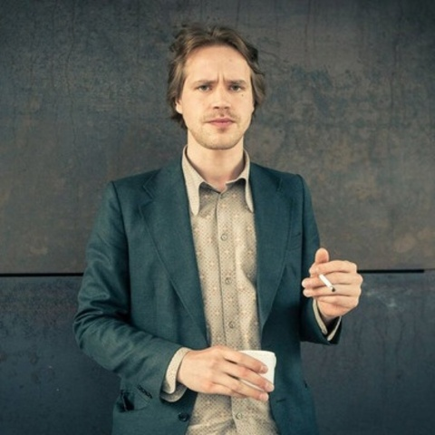

About Robert Kurvitz: Estonian writer, musician and game designer. Was born in a family of artists Raoul Kurwitz and Lilian Mosolainenr, October 8, 1984. In 2013, Robert published the novel “The Sacred and Terrible Scent” and in 2019 the game “Disco Elysium” what was based on the world of his novel.

- Lider of the Ultramelanhool band.
- Writer of the “The Sacred and Terrible Scent”.
- Game designer of the "Disco Elysium".
- One of the funders of ZA/UM company.
- Victim of corporate fraud.